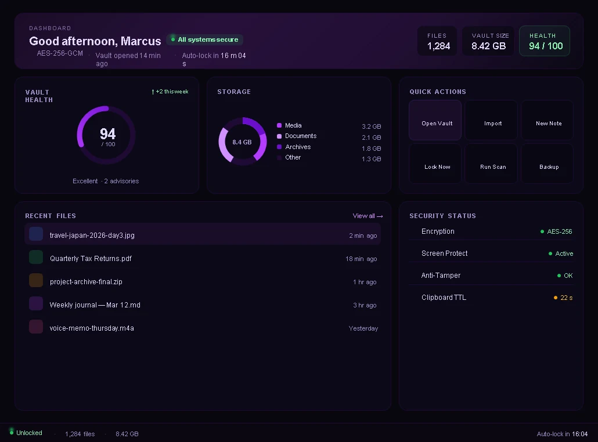
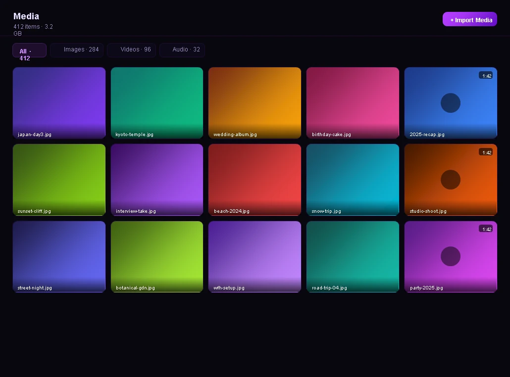
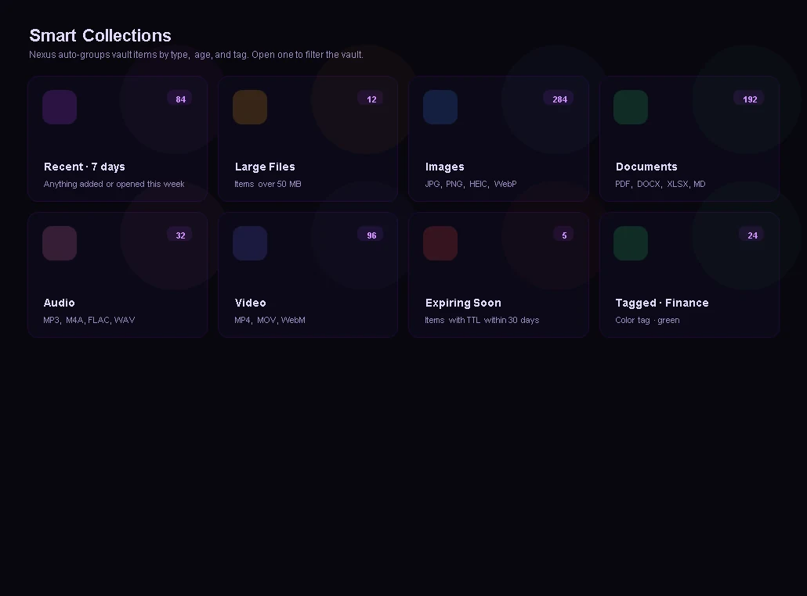
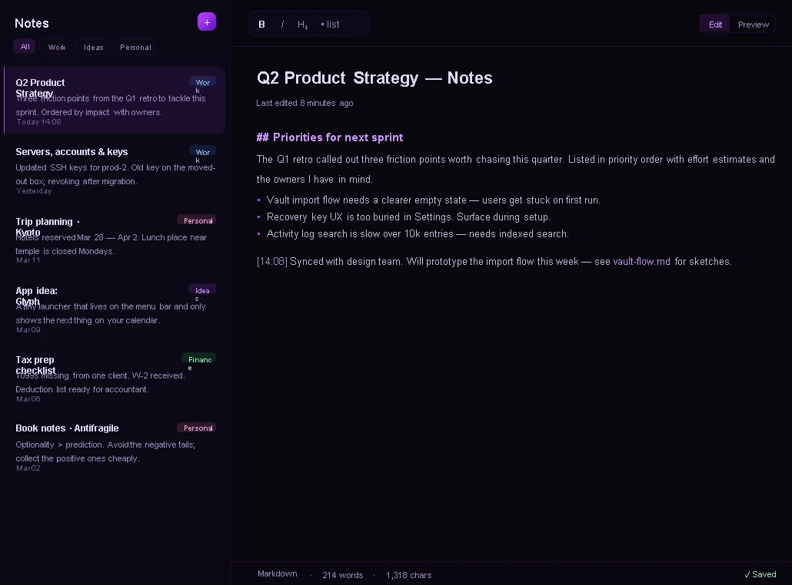
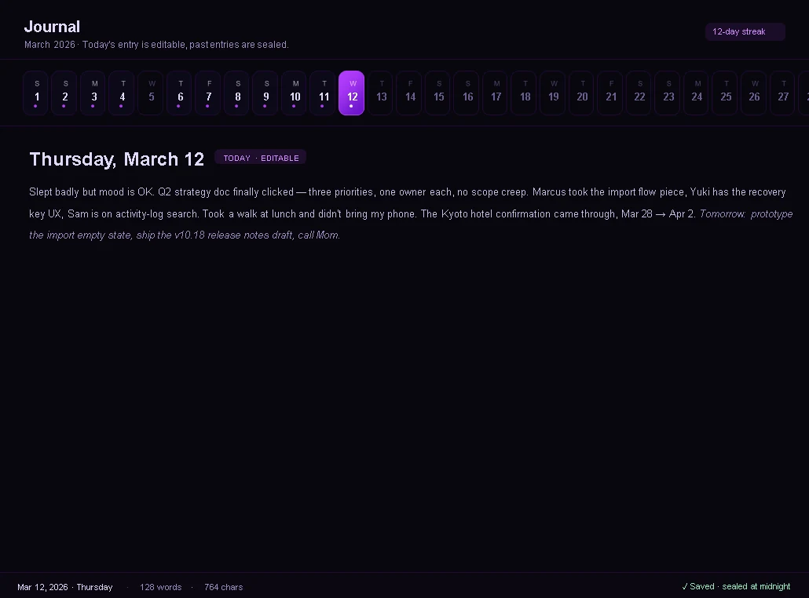
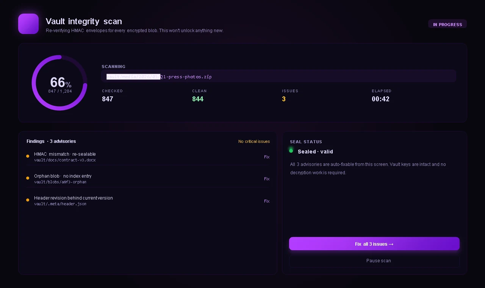

Dashboard
Vault health, storage by type, recent files, quick actions and a live security status.
Features
Files, media and personal data live together, behind one master password, on your own PC.
Design preview. Real screenshots are coming.

Vault health, storage by type, recent files, quick actions and a live security status.

List and grid views, color tags, pinning, per-file expiry, drag and drop, and undo for renames and moves.

A thumbnail grid for images, video and audio with filters for each type.

Recent, large files, images, documents, audio, video, items expiring soon and color-tagged items, grouped for you.

Store logins with offline one-time codes, and copy a password to a clipboard that clears itself.

Write notes with Markdown preview, pin and search them, and export one into the vault as a file.

One entry per day with a calendar strip. Today is editable and past days are read-only.

Run another app in a sandboxed session. Temp files and traces are wiped when it closes.

A health score, runtime protection status and a full integrity scan with results you can act on.

Checks every encrypted file and reports problems it finds, with a fix for each.
Some of these are newer than others. The known issues page lists what we have not fully confirmed yet.